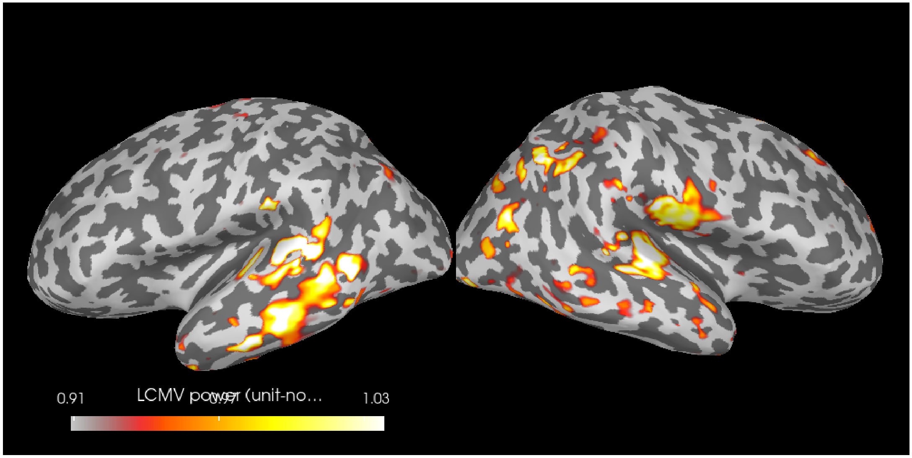
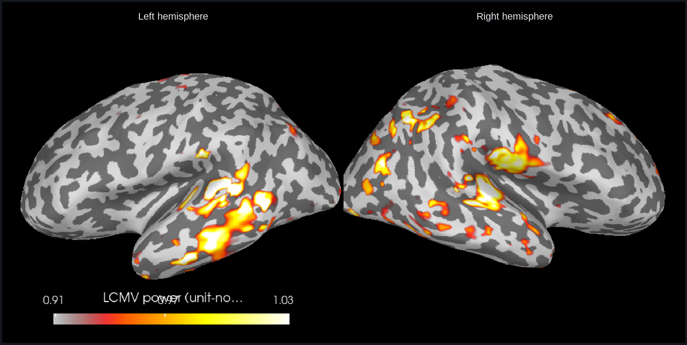
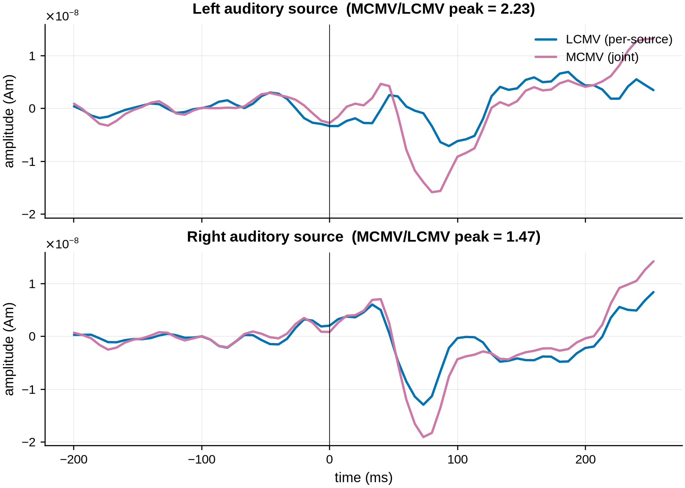
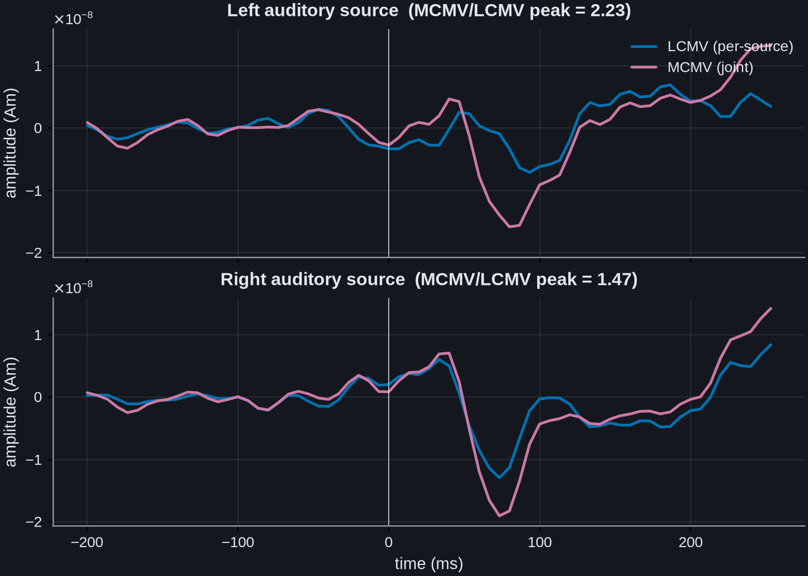
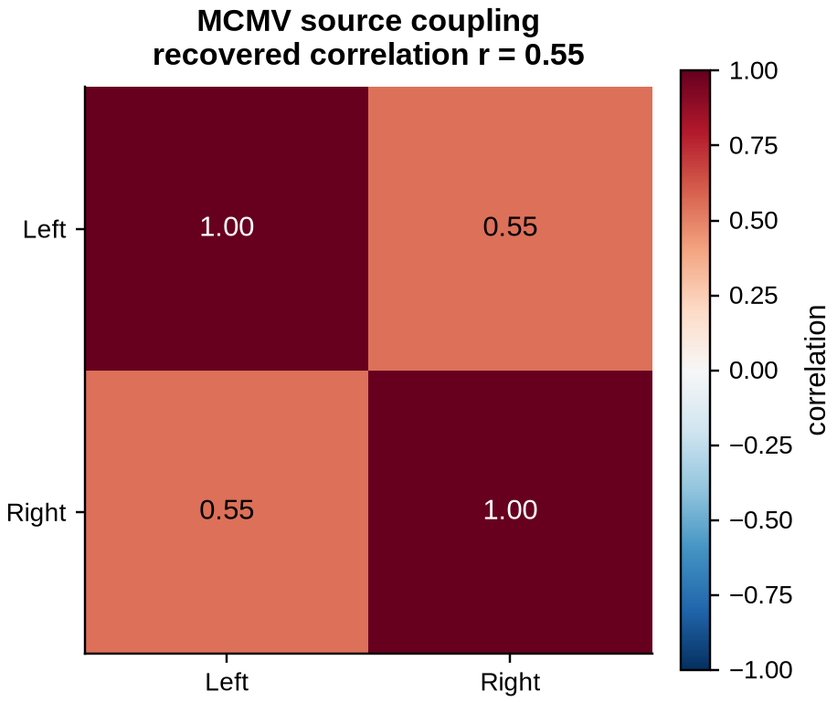
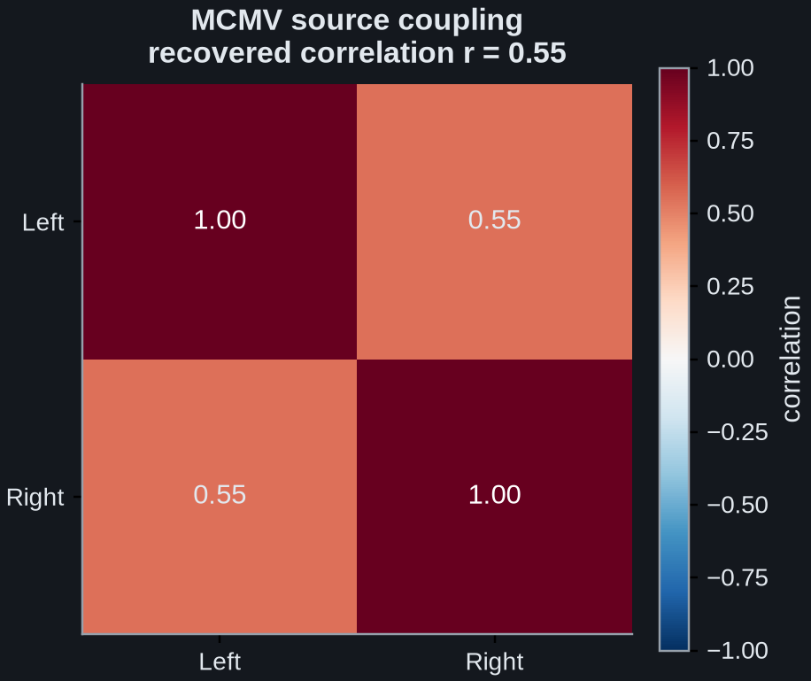
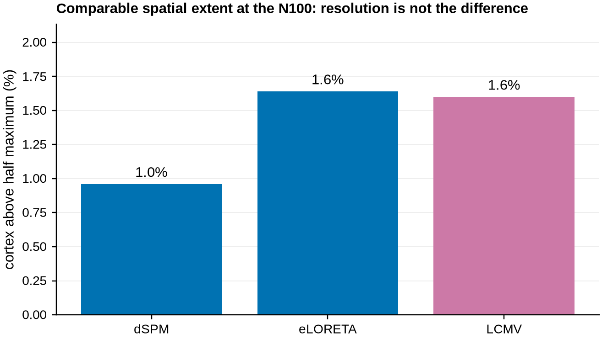
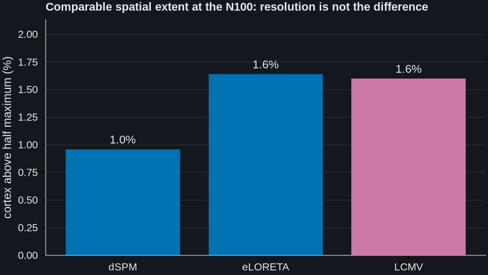

Note
Go to the end to download the full example code.
MCMV joint reconstruction of correlated MEG sources#
A single-source LCMV reconstructs each location with its own filter. When two sources are temporally correlated (as the left and right auditory cortices are during binaural stimulation), each filter treats the other source as interference and partially nulls it, so the recovered time courses are attenuated and mutually contaminated.
The multi-source (MCMV) beamformer constrains all sources in a single filter set: each filter passes its own source with unit gain while placing an exact null on the other constrained sources (Moiseev et al., 2011, Eq. 5). This example locates the two auditory sources with an ordinary LCMV, then contrasts the per-source LCMV time courses with the MCMV joint reconstruction.
The covariances are shrinkage-regularised (the correct estimator across the magnetometer/gradiometer unit scales), and the forward is the full whole-brain BEM solution. MCMV constrains only the two chosen sources, so no decimation is needed.
# Authors: Sepehr Shirani <sepehrshirani@gmail.com>, <s.shirani@ucl.ac.uk>
# Muzhi Wang <muzhi.wang@ucl.ac.uk>
# Jade Serfaty <jade.serfaty.17@ucl.ac.uk>
# License: BSD-3-Clause
import matplotlib.pyplot as plt
import mne
import numpy as np
from mne.beamformer import apply_lcmv, apply_lcmv_cov, make_lcmv
from mne.minimum_norm import apply_inverse, make_inverse_operator
from advance_beamlab import apply_mcmv, apply_mcmv_cov, make_mcmv
data_path = mne.datasets.sample.data_path()
meg = data_path / "MEG" / "sample"
subjects_dir = data_path / "subjects"
Load the auditory epochs (left and right stimulation), the evoked response, and shrinkage-regularised active and baseline covariances.
raw = mne.io.read_raw_fif(meg / "sample_audvis_filt-0-40_raw.fif", preload=True)
events = mne.read_events(meg / "sample_audvis_filt-0-40_raw-eve.fif")
raw.pick("meg")
epochs = mne.Epochs(
raw,
events,
{"Auditory/Left": 1, "Auditory/Right": 2},
tmin=-0.2,
tmax=0.25,
baseline=(None, 0.0),
preload=True,
)
evoked = epochs.average()
# The active window is the N100 (80-130 ms), not the whole post-stimulus epoch.
# This matters, and it is the main practical lesson of this example: a beamformer
# is tuned by the covariance it is built from. Restricted to the N100 the two
# auditory sources are strongly correlated, r = +0.82 between their jointly
# reconstructed traces, which is the regime MCMV exists for.
#
# Widening the window to 50-200 ms does remove the MCMV advantage, but not by the
# route it is tempting to give. Held at these same two vertices the pair does not
# decorrelate at all: r goes to +0.94, and MCMV still gains 1.97 and 1.71 times.
# What changes is the choice of locations. The single-source LCMV peaks that this
# example constrains move over the wider window, the left one by 25 mm out of
# superior temporal cortex and into middle temporal, and it is constraining that
# different pair which costs MCMV the gain.
#
# One caution about measuring the correlation at all, because it is easy to get
# backwards and this example is where it would bite. Those numbers come from the
# *joint* reconstruction. Read the correlation off the per-source LCMV traces
# instead and the same N100 window gives r = -0.09, so a strongly correlated pair
# reads as uncorrelated through the very filter whose cancellation the
# correlation was meant to explain. Estimate it with the joint filter.
data_cov = mne.compute_covariance(epochs, tmin=0.08, tmax=0.13, method="shrunk")
noise_cov = mne.compute_covariance(epochs, tmin=None, tmax=0.0, method="shrunk")
Use the full whole-brain BEM forward with fixed (surface-normal) orientation.
fwd = mne.read_forward_solution(meg / "sample_audvis-meg-eeg-oct-6-fwd.fif")
fwd = mne.pick_types_forward(fwd, meg=True, eeg=False)
fwd = mne.convert_forward_solution(fwd, force_fixed=True, use_cps=True)
Locate the two auditory sources with a standard LCMV: the strongest vertex in each hemisphere.
lcmv = make_lcmv(
evoked.info,
fwd,
data_cov,
reg=0.05,
noise_cov=noise_cov,
pick_ori=None,
weight_norm="unit-noise-gain",
)
stc_pow = apply_lcmv_cov(data_cov, lcmv)
n_lh = len(stc_pow.vertices[0])
lh_idx = int(np.argmax(stc_pow.data[:n_lh]))
rh_idx = n_lh + int(np.argmax(stc_pow.data[n_lh:]))
sources = [lh_idx, rh_idx]
print(f"selected sources (left, right hemisphere): {sources}")
selected sources (left, right hemisphere): [1874, 5579]
The LCMV power map itself is the localisation figure: the two auditory sources selected above appear as the bilateral peaks on the inflated cortex. MCMV will then jointly constrain exactly these two locations.
try:
brain = stc_pow.plot(
subject="sample",
subjects_dir=subjects_dir,
# "split", not "both". With hemi="both" the two inflated surfaces are
# offset along x and a single lateral camera looks straight down that
# axis, so the near hemisphere hides the far one completely: the figure
# would show only the right hemisphere while the text below claims both.
# "split" gives each hemisphere its own panel and its own camera.
hemi="split",
views="lateral",
size=(1000, 500),
clim=dict(kind="percent", lims=[90, 95, 99]),
time_viewer=False, # static image: no interactive picking (offscreen-safe)
# Three labels, not the default eight. Eight five-character values do
# not fit the bar's width and were drawn butted together as one run of
# digits. The title is what makes the remaining numbers mean anything.
add_data_kwargs=dict(
colorbar_kwargs=dict(
n_labels=3, fmt="%.2f", title="LCMV power (unit-noise-gain)"
)
),
)
except Exception as exc: # 3-D rendering is optional
brain = None
print(f"3-D brain plot skipped (no working 3-D backend): {exc}")
# The rendered surface is screenshotted into a matplotlib axis rather than left
# for a 3-D scraper to find. See doc/conf.py for why: it is what makes the
# figure appear correctly in the built documentation, and it keeps the window
# open, which the CI runner needs.
if brain is not None:
fig, ax = plt.subplots(figsize=(10, 5), constrained_layout=True)
shot = brain.screenshot()
ax.imshow(shot)
ax.set_axis_off()
# "split" puts one hemisphere in each half of the render, and nothing in the
# image says which. In a figure whose subject is a bilateral pair that is
# the one thing a reader has to be told.
for frac, side in ((0.25, "Left hemisphere"), (0.75, "Right hemisphere")):
ax.text(
frac * shot.shape[1],
0.03 * shot.shape[0],
side,
ha="center",
va="top",
fontsize=10,
)


Build the MCMV joint filter on those two sources, and a per-source LCMV, both with unit gain so the recovered amplitudes are directly comparable. Unit gain reads out the physical source amplitude, so the two beamformers agree exactly when there is nothing to cancel and diverge only through correlated-source cancellation. By contrast, unit-noise-gain offsets the two even when the sources are independent.
lcmv_ug = make_lcmv(
evoked.info,
fwd,
data_cov,
reg=0.05,
noise_cov=noise_cov,
pick_ori=None,
weight_norm=None, # unit gain: physical source amplitude
)
mcmv = make_mcmv(
evoked.info,
fwd,
data_cov,
sources=sources,
noise_cov=noise_cov,
weight_norm="unit-gain",
)
s_mcmv = apply_mcmv(evoked, mcmv) # (2, n_times)
s_lcmv = apply_lcmv(evoked, lcmv_ug).data[sources] # (2, n_times)
# Both correlations, printed, because the paragraph at the top of this example
# quotes them and because reading one off the wrong filter reverses the sign.
_win = (evoked.times >= 0.08) & (evoked.times <= 0.13)
print(
"source correlation over the covariance window: joint (MCMV) "
f"r = {np.corrcoef(s_mcmv[0, _win], s_mcmv[1, _win])[0, 1]:+.2f}, "
f"per-source (LCMV) r = {np.corrcoef(s_lcmv[0, _win], s_lcmv[1, _win])[0, 1]:+.2f}"
)
source correlation over the covariance window: joint (MCMV) r = +0.82, per-source (LCMV) r = -0.08
The MCMV null on the opposite source removes the shared-signal cancellation, so
the joint auditory time courses are recovered at a fuller amplitude than the
per-source LCMV traces. The peak-amplitude ratio in each panel quantifies how
much the per-source LCMV is attenuated. Both ratios exceed one here, and by a
clear margin on the left hemisphere. Re-run this example with the wider
tmin=0.05, tmax=0.2 covariance window and both ratios collapse to about
one, for the reason set out at the top: the wider window moves the peaks this
example constrains, rather than decorrelating the auditory pair.
times = evoked.times * 1e3
post = evoked.times >= 0.0
# sharey as well as sharex: both panels plot source amplitude, and on separate
# limits a millimetre of ink meant a different amplitude in each, which is
# exactly the comparison the figure is for.
fig, axes = plt.subplots(
2, 1, sharex=True, sharey=True, figsize=(7, 5), constrained_layout=True
)
for ax, i, hemi in zip(axes, range(2), ("Left", "Right"), strict=True):
ratio = np.abs(s_mcmv[i, post]).max() / np.abs(s_lcmv[i, post]).max()
ax.plot(times, s_lcmv[i], color="C0", label="LCMV (per-source)")
ax.plot(times, s_mcmv[i], color="C3", label="MCMV (joint)")
ax.axvline(0, color="k", lw=0.5)
ax.set(
title=f"{hemi} auditory source (MCMV/LCMV peak = {ratio:.2f})",
ylabel="amplitude (Am)",
)
if ax is axes[0]:
ax.legend(loc="upper right")
axes[-1].set_xlabel("time (ms)")


Text(0.5, 36.03039279513889, 'time (ms)')
Unlike a set of independent LCMV filters, MCMV also returns the joint source
covariance directly (apply_mcmv_cov()). Normalised to a
correlation matrix, its off-diagonal is the recovered coupling between the two
hemispheres. That is a quantity the joint constraint estimates and per-source
LCMV cannot provide at all.
src_cov = apply_mcmv_cov(data_cov, mcmv)
std = np.sqrt(np.diag(src_cov))
src_corr = src_cov / np.outer(std, std) # scale-invariant correlation matrix
fig, ax = plt.subplots(constrained_layout=True, figsize=(4.2, 3.6))
im = ax.imshow(src_corr, cmap="RdBu_r", vmin=-1, vmax=1)
ax.grid(False) # the global grid was being drawn across the cells
ax.set(
xticks=[0, 1],
yticks=[0, 1],
xticklabels=["Left", "Right"],
yticklabels=["Left", "Right"],
title=f"MCMV source coupling\nrecovered correlation r = {src_corr[0, 1]:.2f}",
)
for a in range(2):
for b in range(2):
# Read the ink off the cell it sits on rather than off a threshold in
# the data: RdBu_r only darkens near the ends of its range, so a cut at
# some correlation guesses at where that happens. Fixed black put the
# two diagonal labels on the darkest red in the map, well under any
# readable contrast.
red, green, blue, _ = im.cmap(im.norm(src_corr[a, b]))
luminance = 0.2126 * red + 0.7152 * green + 0.0722 * blue
ax.text(
b,
a,
f"{src_corr[a, b]:.2f}",
ha="center",
va="center",
color="w" if luminance < 0.5 else "k",
)
fig.colorbar(im, ax=ax, label="correlation")


<matplotlib.colorbar.Colorbar object at 0x7f68da7654c0>
Where does this sit next to the inverse methods you already use? dSPM and eLORETA answer a different question from a beamformer, and it is worth being concrete rather than declaring a winner.
The minimum-norm family is linear: the operator is built from the forward and the noise covariance alone and never sees the data covariance. That makes it immune to the correlated-source cancellation this whole example is about. There is no adaptive null to place, so there is nothing to cancel with. A beamformer buys its selectivity by adapting to the data, and inherits the cancellation problem in exchange. MCMV’s contribution is to keep the adaptive filter while removing the cancellation, for sources you can name in advance.
It is tempting to add “and the beamformer is sharper”, and on this recording that is simply not true. Measured like for like (the fraction of cortex left above half the peak, for the absolute source amplitude at the same instant), the three are comparable, with dSPM the most compact of them. Resolution is not what separates these methods here; their behaviour under correlated sources is.
inv = make_inverse_operator(
evoked.info, fwd, noise_cov, loose=0.0, depth=None, verbose=False
)
peak_time = 0.1
extent = {}
for method in ("dSPM", "eLORETA"):
stc = apply_inverse(evoked, inv, lambda2=1.0 / 9.0, method=method, verbose=False)
amp = np.abs(stc.data[:, np.argmin(np.abs(stc.times - peak_time))])
extent[method] = float((amp > 0.5 * amp.max()).mean())
stc_lcmv = apply_lcmv(evoked, lcmv)
amp = np.abs(stc_lcmv.data[:, np.argmin(np.abs(stc_lcmv.times - peak_time))])
extent["LCMV"] = float((amp > 0.5 * amp.max()).mean())
for name in ("dSPM", "eLORETA", "LCMV"):
print(f"{name:8s}: {extent[name]:6.1%} of vertices above half maximum")
fig, ax = plt.subplots(figsize=(6, 3.4), constrained_layout=True)
names = ["dSPM", "eLORETA", "LCMV"]
bars = ax.bar(names, [extent[n] * 100 for n in names], color=["C0", "C0", "C3"])
ax.bar_label(bars, fmt="%.1f%%", padding=3)
ax.set(ylabel="cortex above half maximum (%)", ylim=(0, max(extent.values()) * 130))
ax.set_title(
"Comparable spatial extent at the N100: resolution is not the difference",
loc="left",
fontsize=10,
)
ax.grid(axis="x", visible=False)


dSPM : 1.0% of vertices above half maximum
eLORETA : 1.6% of vertices above half maximum
LCMV : 1.6% of vertices above half maximum
So the choice is not about resolution on this dataset. It is about what you need. If you want a map with no assumption about how many sources there are, and no risk of correlated-source cancellation, a linear method remains the safer default. If you have specific, named locations whose time courses you need recovered without them cancelling each other (the bilateral auditory pair here), that is what the joint constraint is for. They are complementary tools, and this example is about the second case.
Total running time of the script: (0 minutes 25.572 seconds)